從西歸浦每日偶來市場對面山上的入口進入李仲燮路, 沿陡坡慢慢向下走, 穿過其中一段的李仲燮藝術街, 來到一個 T 字路口, 路旁是一間茅舍, 茅舍便是李仲燮故居 (이중섭생가), 已經來到李仲燮公園 (이중섭공원)。
李仲燮公園
為了紀念李仲燮先生, 西歸浦市將其故居修復原貌, 並開闢為李仲燮公園, 並設立李仲燮美術館, 介紹其生平及展出作品。
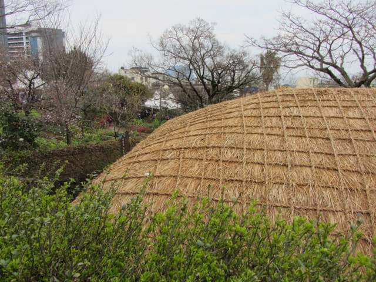
沿左邊的小徑可往李仲燮美術館 (이중섭미술관)。我們沒有藝術細胞, 不打算參觀李仲燮美術館, 只計劃往李仲燮公園逛逛。
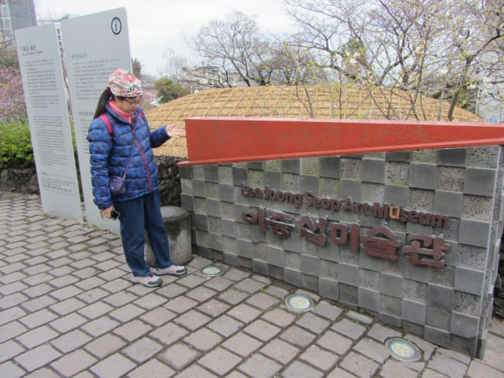
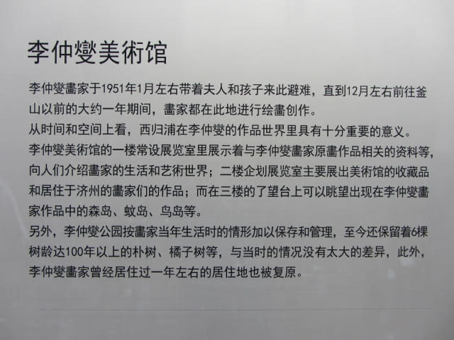
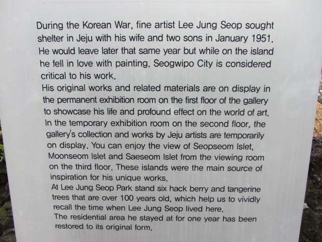
李仲燮公園 (이중섭공원)
沿T 字路左邊的小徑走便進入了李仲燮公園, 這裡仍然是偶來6號小路的其中一段。
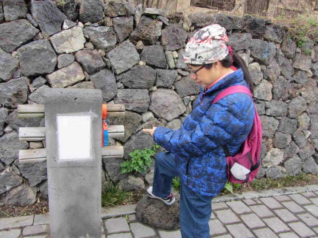
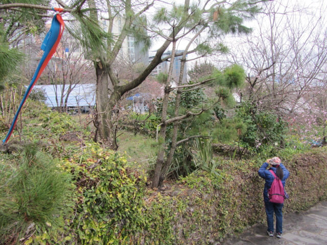
小徑旁的櫻花和梅花正在綻放, 十分漂亮, 好像在熱烈歡迎到訪的每一位旅客。
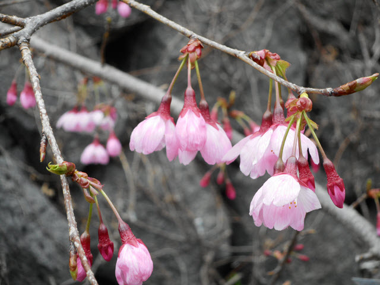
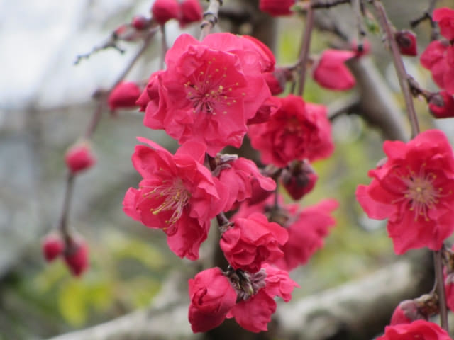
李仲燮故居 (이중섭생가)
沿小徑往下走幾十步便來到李仲燮故居的入口。
李仲燮故居
李仲燮先生在韓戰期限逃難來到西歸浦時, 當時一對夫婦提供了一個房間給他居住。 就在這細小的房間, 李仲燮先生與日本籍妻子及兩名兒子在這裡渡過一生最快樂的日子, 並且創作出多個極富盛名的代表作品。
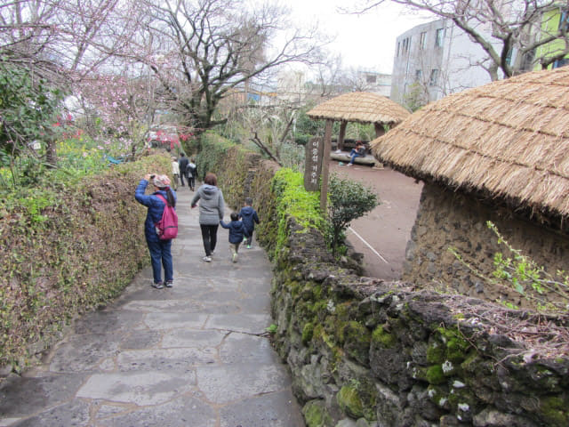
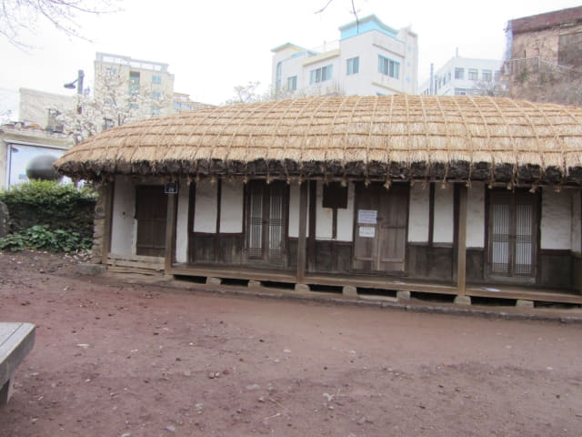
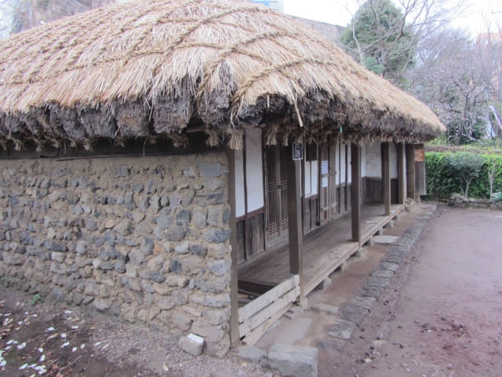
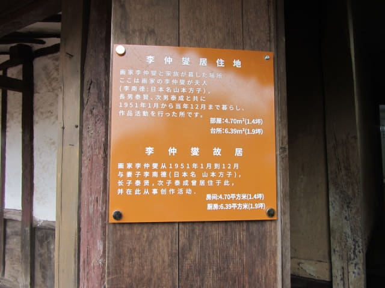
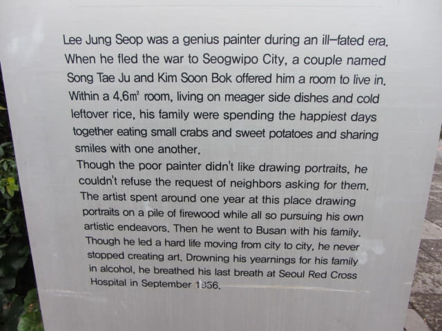
傳統的濟州房屋是沒有大門的, 僅以三根圓木棍代替, 足以證明以往社會的治安很好。圓木棍不同的擺放方式代表著不同的含義, 只有一根圓木棍橫在門口, 代表主人暫時外出, 馬上就會回來; 橫著兩根圓木棍, 代表主人短時間內不會回來; 而橫著三根圓木棍則代表主人出遠門, 長時間不會回來。
濟州島三無
濟州島除了大多數人知道的「三多」外, 還有「三無」- 無乞丐、無小偷、無大門。
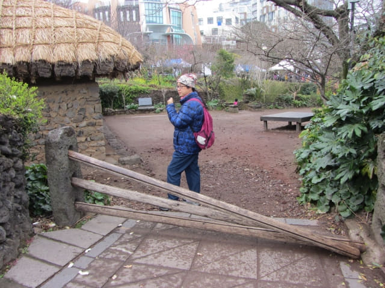